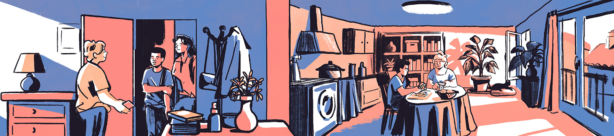
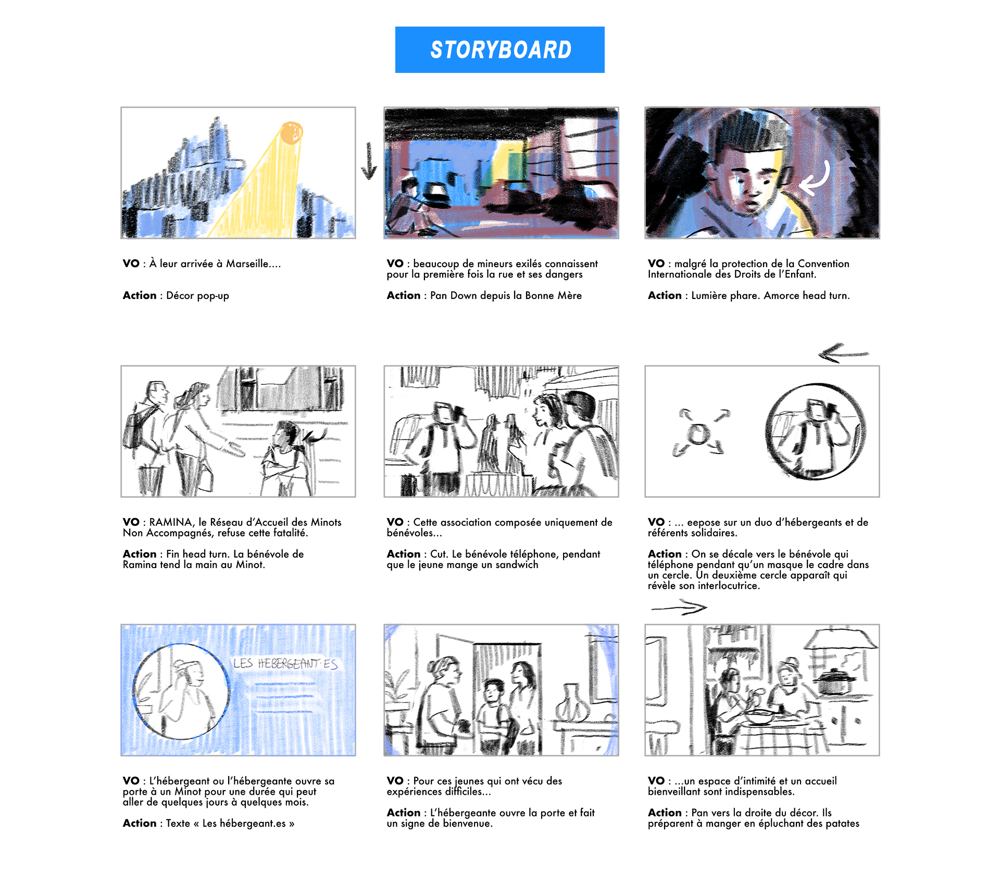
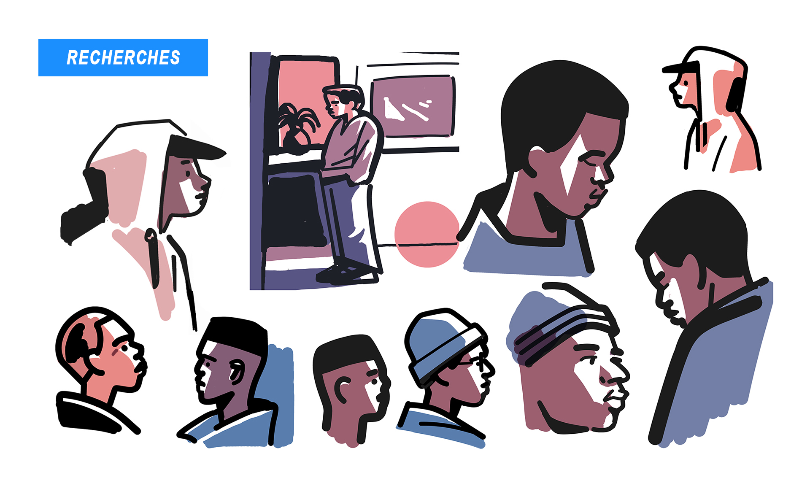
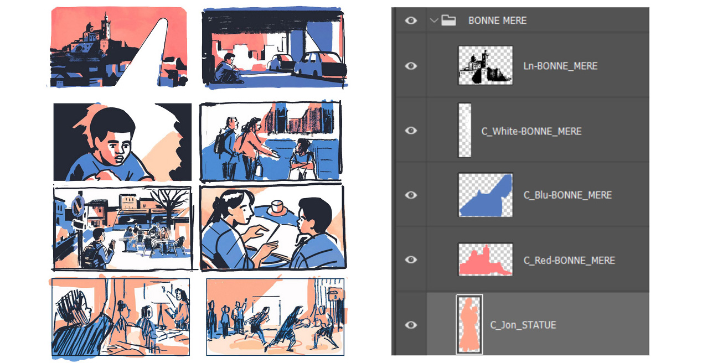
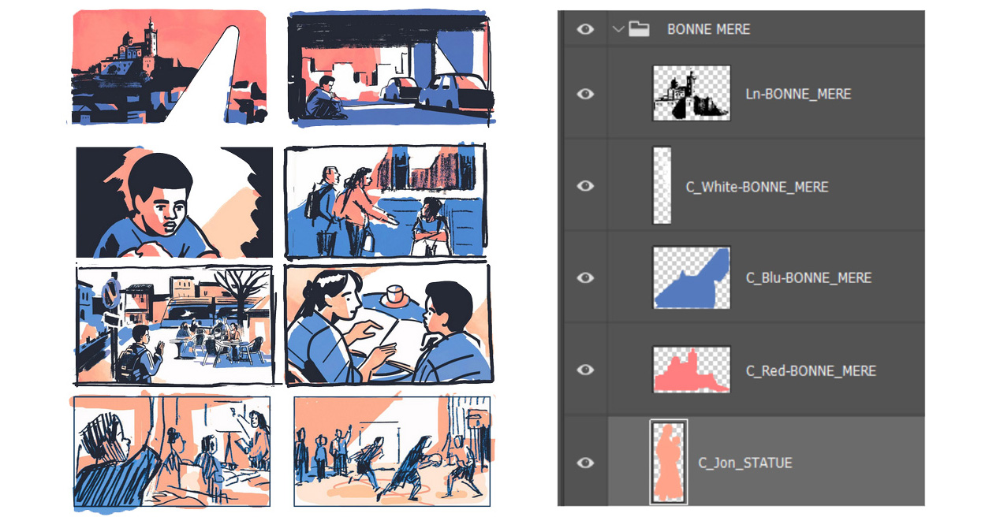
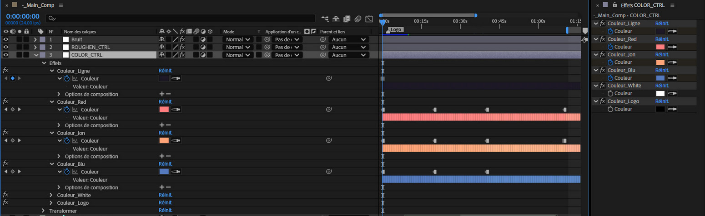
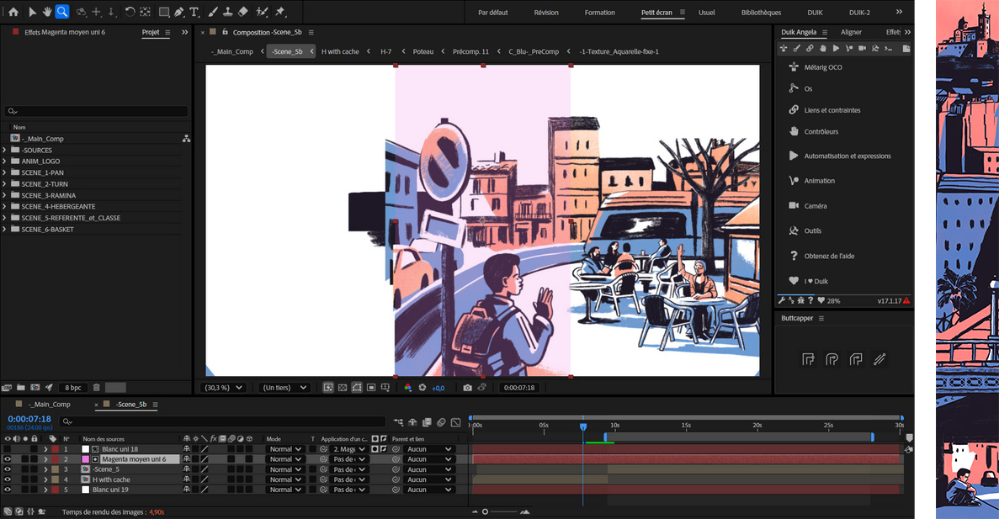

Animation - Ramina
Année : 2025
J'ai réalisé une vidéo de présentation pour Ramina (Réseau d’Accueil des Minots Non Accompagnés).
Cette association marseillaise constituée uniquement de bénévoles organise la solidarité pour les Mineurs Non Accompagnés en situation de migration.
La vidéo présente le fonctionnement de l’association qui repose sur le duo hébergeant·e/référent·e, tout en évoquant l’éventail plus large d’activités mises en place par Ramina (cours de français, activités sportives et culturelles, aide juridique…)
Le but est aussi de susciter des vocations chez de potentiels bénévoles, en montrant la nécessité de l'accueil des MNA, leur quotidien et celui des solidaires qui les accueillent.
Illustrations




{kind=link}
{kind=link}
{kind=link}
Processus


---


Pour animer le mouvement de tête du personnage, j’ai utilisé DUIK.

---
Pour accentuer le réalisme du Pan du début, j'ai décidé d'utiliser des modèles 3D d'immeubles libres de droit (trouvés sur fab.com).
J’ai animé un mouvement de cam pour avoir un parallax des immeubles et j’ai rotoscopé cette référence pour avoir un rendu 2D.
Pour accentuer le réalisme du Pan du début, j'ai décidé d'utiliser des modèles 3D d'immeubles libres de droit (trouvés sur fab.com).
J’ai animé un mouvement de cam pour avoir un parallax des immeubles et j’ai rotoscopé cette référence pour avoir un rendu 2D.
---
Une idée importante de la direction artistique, c'était l'éclaircissement de la palette prévu par un color script, afin de guider l’émotion du spectateur d’une situation de détresse à une promesse d’espoir.
Lors de la réalisation des illustrations, chaque calque de couleur était nommé selon une convention précise. 
Lors de la réalisation des illustrations, chaque calque de couleur était nommé selon une convention précise. 
{kind=link}
Cela m'a permis ensuite depuis After Effects de contrôler la couleur de chaque calque selon le timing de la scène et d'obtenir cet éclaircissement progressif.

---
J’ai adapté l’entièreté de la vidéo au format reel pour les réseaux sociaux de Ramina. En modifiant les mouvements de caméra, les animations de texte et les transitions.
J’ai adapté l’entièreté de la vidéo au format reel pour les réseaux sociaux de Ramina. En modifiant les mouvements de caméra, les animations de texte et les transitions.

← Retour à la galerie